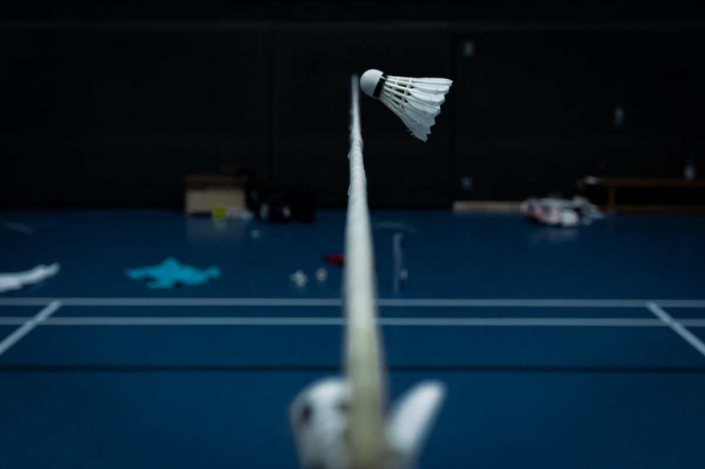

Basketball
My favorite thing to do in my free time is play basketball and watch the NBA. I made the basketball team in 6th grade and won the championship that year. It's great for exercise and sometimes I get competitive.

Video Games
The gaming device that I grew up with is a DS and later got the PSP. When I moved to America the main game that I played was Minecraft. These days I like to play League of Legends and also like watching the Esports scene.

Badminton
When I was younger me and my sister would always play badminton. It's another acitivity I like to do when I have free time because it's great for exercise and helps clear up my mind.
Designed by BootstrapMade